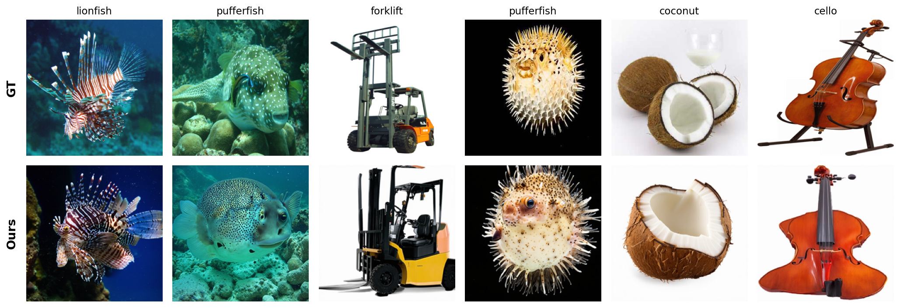

- Viewing
- Decoding
- Reconstructed
Research Overview
Key Results
From a Brain Signal To A Finished Image In Three Steps
Every image on this page was painted from EEG alone. The system never sees the photo the person was looking at.
-
01
Look
A person looks at an object while an EEG headset records their brain activity.
-
02
Decode
A spatio-temporal encoder reads the recording. Adaptive Identity Evolution then tunes it to the individual, so new users can be enrolled without retraining the model.
-
03
Dream
A diffusion transformer treats the brain signal and the image as one sequence and paints the picture from pure noise.
Inside Mind-DiT
Three modules take a user's raw EEG all the way to a generated image.
What They Saw, Next To What Their Brain Painted
These are held-out test images that Mind-DiT never saw during training. Each card turns from the photo the participant saw to the image Mind-DiT painted from their EEG.
lionfish
It isn't a perfect mind reader. Sometimes it paints a different object, but even those images come out clear and plausible, closer to an interpretation than to noise.
Held-out Test Trials
Top: the photo the participant saw (GT). Bottom: Mind-DiT's reconstruction from their EEG alone.

Ahead Of Prior Methods On Both Benchmarks
Average over all participants. Classification uses top-1 accuracy. Reconstruction uses two-way identification, where the generated image has to pick its true photo out of a pair.